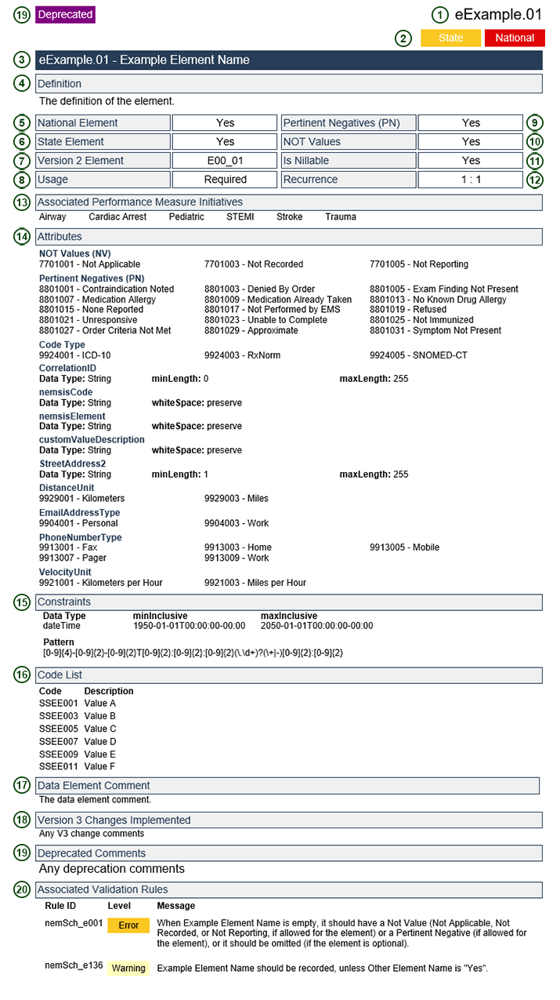

NEMSIS Version 3.5.1 Data Dictionary Content
**Note: The numbers to the right of the content listed below represent the location for each element on the Sample Page of the Data Dictionary (page vi).
- Data Element Number (1)
- The NEMSIS Version 3 element numbering system has been revised to improve the information that can be derived from just the data element number. An example of a data element number is dAgency.01.
- The data element number begins with either a "d" representing the demographic (agency) section or an "e" representing the EMS PCR section.
- A one word descriptor for each section is now included in the data element number.
- A period separates the section (e.g. dAgency) from the data element number (e.g. 01).
- National and State Element Indicator (2) (5) (6)
- National = Yes, is an indication that the data element is required to be collected at the local EMS agency level and submitted to the state
- State = Yes, is an indication that the data element is recommended to be collected at the State level.
- Data Element Name (3)
- The name for the data element.
- Data Element Definition (4)
- The definition for the data element.
- Version 2 Number (7)
- The NEMSIS Version 2.2.1 Data Element Number.
- If the Data Element is new to Version 3.5.1, the Version 2 Number will be blank.
- Data Structure Information
- Recurrence (12)
- Indication that the data element can have more than one value.
- Represented by two characters separated by a colon. The configuration includes:
- 0:1 = element is not required and can occur only once
- 0:M = element is not required and can repeat multiple times
- 1:1 = element is required and can occur only once
- 1:M = element is required and can repeat multiple times
- Usage (8)
- Indication of when the data element is expected to be collected.
- Mandatory = Must be completed and does not allow for NOT values
- Required = Must be completed and allows NOT values
- Recommended = Does not need to be completed and allows NOT values
- Optional = Does not need to be completed and does not allow for NOT values
- NOT Value Characteristics (10)
- Indication that the data element can have NOT values.
- NOT Values are used (where permitted) to document that a data element was not applicable, not completed, or not collected by the state.
- NOT Values are documented as an attribute of an element. It allows the documentation of NOT value when a real value is not documented.
- Please reference the NEMSIS White Paper describing the use of NOT Values, Pertinent Negatives, and Nill:
https://nemsis.org/media/nemsis_v3/master/UsageGuides/NEMSISv3_AttributeUsage.pdf
- NOT Values Accepted (14)
- Indication of which of the following three NOT values is acceptable.
- Not all data elements accept NOT values.
- NOT Values have been condensed in Version 3.
- Not Applicable = The data element is not applicable or pertinent.
- Not Recorded = The data element is considered applicable, but was left blank. The software should auto-populate it with "Not Recorded".
- Not Reporting = The data element is not collected by the EMS agency or state. This NOT value does not apply to National elements where Usage is specified as "Required".
- Pertinent Negative Values (PN) (9) (14)
- A list of Pertinent Negative Values which can be associated with a data element.
- Not all data elements accept Pertinent Negative Values.
- Pertinent Negative Values are documented as "an attribute" of an element. It allows the documentation of pertinent negative value in addition to the documentation of a "real" value.
- Please reference the NEMSIS White Paper describing the use of NOT Values, Pertinent Negatives, and Nill:
https://nemsis.org/media/nemsis_v3/master/UsageGuides/NEMSISv3_AttributeUsage.pdf
- Example of use:
- Example #1 - Aspirin Administration:
- If the medication Aspirin is part of the agency protocol for Chest Pain but was not administered by the responding crew, the reason why should be documented. This is done through the use of Pertinent Negative Values. If the patient took the Aspirin prior to the EMS arrival on scene, the value "Medication Already Taken" should be documented in addition to "Aspirin".
- Is Nillable (11)
- Indication that the element can accept a "blank" value.
- If the element is left "blank" the software must submit an appropriate value of one of the two attributes: Pertinent Negative or NOT Values.
- Associated Performance Measure Initiatives (13)
- Indication that the data element has value in describing, defining, or measuring EMS from a performance perspective. Performance Measures can be associated with EMS service delivery, patient care, or both. The following service delivery or time dependent illness/injury performance measure topics have been included in NEMSIS Version 3:
- Airway - Airway Management
- Cardiac Arrest - Out of Hospital Cardiac Arrest
- Pediatric - Acute Pediatric Care
- Response - EMS Response Time
- STEMI - ST Elevation Myocardial Infarction (STEMI)
- Stroke - Acute Stroke Care
- Trauma - Acute Injury/Trauma Care
- Attributes (14)
- An attribute provides extra information within an element.
For information related to the first three attributes please see the NEMSIS document
'How to Utilize NEMSIS V3 "NOT values/pertinent negatives/nillable':
https://nemsis.org/media/nemsis_v3/master/UsageGuides/NEMSISv3_AttributeUsage.pdf
The following are possible attributes:
- PN (Pertinent Negative)
- 8801001 - Contraindication Noted
- 8801003 - Denied By Order
- 8801005 - Exam Finding Not Present
- 8801007 - Medication Allergy
- 8801009 - Medication Already Taken
- 8801013 - No Known Drug Allergy
- 8801015 - None Reported
- 8801017 - Not Performed by EMS
- 8801019 - Refused
- 8801021 - Unresponsive
- 8801023 - Unable to Complete
- 8801025 - Not Immunized
- 8801027 - Order Criteria Not Met
- 8801029 - Approximate
- 8801031 - Symptom Not Present
- NV (Not Value)
- 7701001 - Not Applicable
- 7701003 - Not Recorded
- 7701005 - Not Reporting
- Nillable xsi:nil="true"
- Code Type
- 9924001 = ICD-10
- 9924003 = RxNorm
- 9924005 = SNOMED-CT
- CorrelationID
- Data Type = String
- minLength = 0
- maxLength = 255
- DistanceUnit
- 9921001 - Kilometers
- 9921003 - Miles
- EmailAddressType
- 9904001 - Personal
- 9904003 - Work
- nemsisCode
- nemsisElement
- nemsisValueDescription
- PhoneNumberType
- 9913001 - Fax
- 9913003 - Home
- 9913005 - Mobile
- 9913007 - Pager
- 9913009 - Work
- ProcedureGroupCorrelationID
- Date Type = CorrelationID
- StreetAddress2
- Data Type = String
- minLength = 1
- maxLength = 255
- TimeStamp
- Data Type = DateTime
- minValue = 1950-01-01T00:00:00-00:00
- maxValue = 2050-01-01T00:00:00-00:00
- UUID
- UUIDs must be generated using the IETF RFC 4122 standard.
- RFC 4122 defines 4 algorithms for UUID generation, any of these four can be used.
- UUIDs must be represented in canonical form, matching the following regular expression: [a-fA-F0-9]{8}-[a-fA-F0-9]{4}-[1-5][a-fA-F0-9]{3}-[89abAB][a-fA-F0-9]{3}-[a-fA-F0-9]{12}
- VelocityUnit
- 9921001 - Kilometers per Hour
- 9921003 - Miles per Hour
- Code List (16)
- A list of values associated with the data element. Not all data elements have predefined value sets.
- Codes for each value:
- The codes are based on a 7-digit number, in a 2-2-3 pattern (without dashes).
- The first set of two numbers represent the data section
- The second set of two numbers represent the element number
- The last set is a 3-digit number for each value beginning at 001; The codes increase in increments of two (2).
- Codes are typically sequential (by two) and alphabetical. Some ordering is provided in an effort to present information based on workflow.
- Several values and codes reference external standards such as ICD-10, RxNorm, SNOMED, etc. NEMSIS will assist in providing a recommended list of EMS specific values and codes from these larger standards for most elements using these external standards.
- Data Element Editorial Comments (17)
- Comments are provided to describe additions, changes, clarifications, or provide additional insight into the data element.
- Version 3 Changes Implemented (18)
- Comments providing insight into specific Version 3 changes such as new or revised data elements.
- Element Deprecated(19)
- Elements that are signified as "deprecated" will be removed from a future version of the NEMSIS standard. Their use should now be avoided, but will be supported until they are removed from the standard.
- Associated Validation Rules (20)
- A list of national Schematron validation rules associated with the element. Additional validation rules may be implemented at the state or local level.
